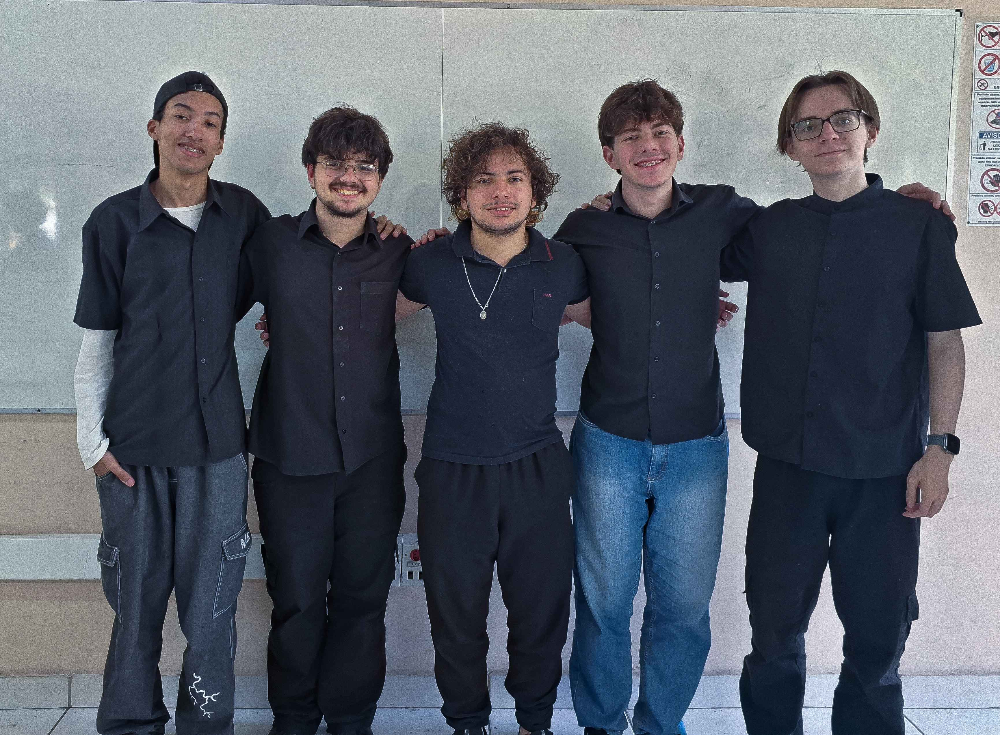

Sobre Nós
QUEM SÃO OS CRIADORES POR TRÁS DO KAMIVERSE?
Descubra quem somos, qual o nosso propósito e como a nossa paixão pela cultura japonesa ajudou a concluir o projeto!
Descubra quem somos, qual o nosso propósito e como a nossa paixão pela cultura japonesa ajudou a concluir o projeto!
Nosso objetivo é aproximar o público da rica mitologia japonesa através de uma experiência digital interativa e visualmente marcante. Acreditamos que a tecnologia pode ser uma ponte entre tradição e modernidade, tornando antigas narrativas acessíveis a novas gerações.
Com muita força, dedicação e carinho, fomos capazes de entregar um projeto rico e que cumpra com os requisitos do TCC!
Nossa paixão de longa data pela cultura e estética japonesa foi a semente deste projeto. Ao nos aprofundarmos na mitologia japonesa, encontramos um universo rico e complexo que merecia ser explorado. Essa admiração não só nos motivou a aplicar rigor acadêmico, mas também nos inspirou a dar vida a essa história através da arte digital, criando uma ponte visual e imersiva entre a tradição e o nosso TCC.
Saiba mais sobre cada um dos integrantes da Kamiverse!
Meses de Leitura Aplicada
Páginas Concluídas
Referências Consultadas
Olá pessoal! Me chamo Vitor Alexandre e sou responsável pela codificação e desenvolvimento do Site. Eu traduzo a nossa visão em linhas de código, garantindo a funcionalidade e a estrutura técnica do nosso projeto.
Olá! Eu sou Matheus Letieri e sou responsável por criar os sprites em Pixel Art, dando vida e estética retrô ao nosso projeto. Cuido da parte criativa e da identidade visual dos personagens e elementos.
Eu sou Vitor Lamin e sou responsável por garantir a coerência visual e detalhes da Pixel Art. Meu foco é criar sprites coerentes com a nossa história, harmonizar o estilo e a paleta de cores para construir o universo visual do nosso TCC.
Me chamo Pedro Henrique e sou responsável pelo Design (UI/UX). Meu papel é planejar a experiência do usuário, tornando a interface do site intuitiva, funcional e esteticamente agradável.
Me chamo Tiago Herdeiro e minha responsabilidade no projeto se dá pela documentação e rigor metodológico do TCC. Garanto que todo o processo de pesquisa e desenvolvimento esteja registrado de forma clara, completa e academicamente sólida.